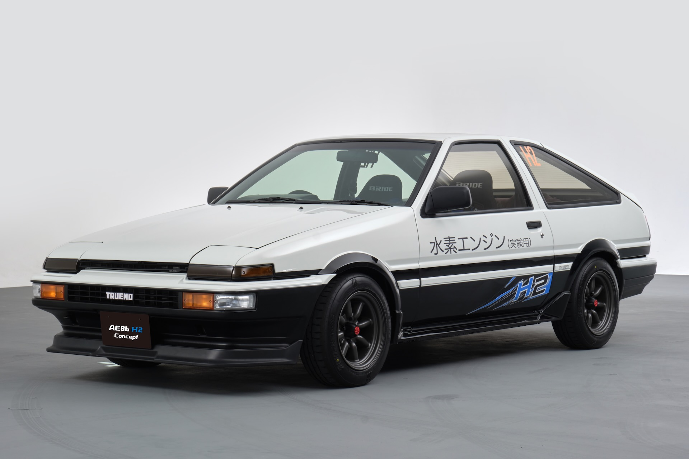

Corolla AE86

A Toyota Corolla AE86 – vagy ahogy a rajongók hívják, a "Hachi-Roku" (japánul nyolcvanhat) – az autózás történetének egyik legkülönlegesebb ikonja, amely bebizonyította, hogy a tiszta vezetési élményhez egyáltalán nincs szükség brutális lóerőkre. A nyolcvanas évek közepén bemutatott, pehelysúlyú (alig 1000 kilós), hátsókerék-meghajtású sportkupé lelke a legendás, pörgős 4A-GE 1.6 literes szívómotor, amely hihetetlen közvetlenséggel, mechanikus nyerseséggel reagál a gázadásra. Tökéletes súlyelosztásának, zseniális futóművének és páratlan agilitásának köszönhetően az AE86 a japán hegyi utak (touge) koronázatlan királyává vált, ahol a lendületautózás és a precíz súlypontáthelyezés mindennél többet számított. Ez a gép adta a legfőbb eszközt Keiichi Tsuchiyának, a „Driftkirálynak” a modern driftelés alapjainak letételéhez, miközben az Initial D című kultikus sorozat révén a globális popkultúra halhatatlan részévé is vált. Az AE86 nem az egyenesekben akar letaglózni; varázsa abban az őszinte, analóg és intim kapcsolatban rejlik, ami ember és gép között a kanyarok csúszáshatárán táncolva jön létre.